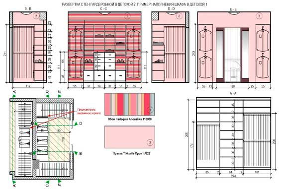

Развертки шкафов и гардеробных

Розгортки комор, шаф, гардеробних та інших подібних місць зберігання, розташованих в різних частинах квартири або будинку, завжди виконуються окремо від інших приміщень. При розробці дизайн-проекту ці концепти дозволяють функціонально організувати наявний простір і максимально точно визначити, яка кількість речей вдасться розмістити в кожному конкретному місці. Згодом же господарі, з часом побажавши змінити обстановку, зможуть використовувати ті ж креслення для замовлення нового наповнення шаф і гардеробних, скорегувавши їх під нові завдання.